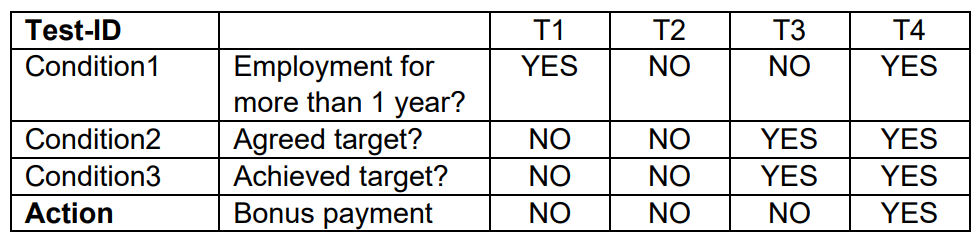
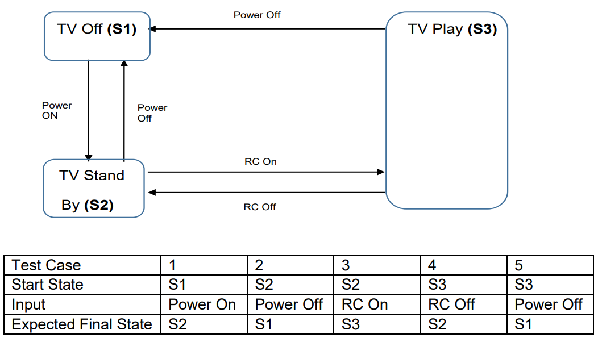
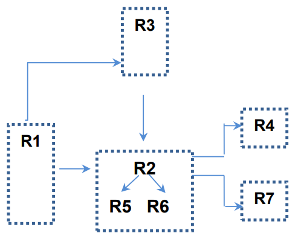

Which one of the following answers describes a test condition?
A distinguishing characteristic of a component or system
A testable aspect of a component or system identified as a basis for testing
The degree to which a software product provides functions which meet stated and implied
Test cases designed to execute combinations of conditions and actions resulting from them
Select ONE option.
Answer: b
Is not correct. Definition of feature according to glossary
Is correct. From glossary
Is not correct. Definition of functionality suitability according to glossary
Is not correct. Like Definition of Decision table testing according to glossary
Question #2 (1 Point)
Which of the following statements is a valid objective for testing?
The test should start as late as possible so that development had enough time to create a good product
To validate whether the test object works as expected by the users and other stakeholders
To prove that all possible defects are identified
To prove that any remaining defects will not cause any failures
Select ONE option.
Answer: b
Is not correct. Contradiction to principle 3: "Early testing saves time and money"
Is correct. This is one objective of testing
Is not correct. Principle #2 states that exhaustive testing is impossible, so one can never prove that all defects were identified
Is not correct. To make an assessment whether a defect will cause a failure or not, one must detect the defect first. Saying that no remaining defect will cause a failure implicitly means that all defects were found. This again contradicts principle #2
Question #3 (1 Point)
Which of the following statements correctly describes the difference between testing and debugging?
Testing identifies the source of defects; debugging analyzes the defects and proposes prevention activities
Dynamic testing shows failures caused by defects; debugging eliminates the defects, which are the source of failures
Testing removes faults; but debugging removes defects that cause the faults
Dynamic testing prevents the causes of failures; debugging removes the failures
Select ONE option.
Answer: b
Is not correct. Testing does not identify the source of defects, debugging identifies the source of defects
Is correct. Dynamic testing can show failures that are caused by defects in the software. Debugging eliminates the defects, which are the source of failures
Is not correct. Testing does not remove faults, but debugging removes faults, which is synonymous with defects, that may cause the failures
Is not correct. Dynamic testing does not directly prevent the causes of failures (defects) but detects the presence of defects
Question #4 (1 Point)
Which one of the statements below describes the most common situation for a failure discovered during testing or in production?
The product crashed when the user selected an option in a dialog box
The wrong version of a compiled source code file was included in the build
The computation algorithm used the wrong input variables
The developer misinterpreted the requirement for the algorithm
Select ONE option.
Answer: a
Is correct. A crash is clearly noticeable by the user
Is not correct. This is a defect, not a failure since there is something wrong in the code. It may not result in a visible or noticeable failure, for example, if the changes in the source code file are only in comments
Is not correct. The use of wrong input variables may not result in a visible or noticeable failure, for example, if nobody uses this particular algorithm; or if the wrong input variable has a similar value to the correct input variable; or if the FALSE result of the algorithm is not used
Is not correct. This type of fault will not necessarily lead to a failure; for example, if no one uses this special algorithm
Question #5 (1 Point)
Mr. Test has been testing software applications on mobile devices for a period of 5 years. He has a wealth of experience in testing mobile applications and achieves better results in a shorter time than others. Over several months, Mr. Test did not modify the existing automated test cases and did not create any new test cases. This leads to fewer and fewer defects being found by executing the tests. What principle of testing did Mr. Test not observe?
Testing depends on the environment
Exhaustive testing is not possible
Repeating the same tests will not find new defects
Defects cluster together
Select ONE option.
Answer: c
Is not correct. Testing is context dependent, regardless of it being manual or automated (principle #6), but does not result in detecting a decreasing number of faults as described above
Is not correct. Exhaustive testing is impossible, regardless of the amount of effort put into testing (principle #2)
Is correct. Principle #5 says "If the same tests are repeated over and over again, eventually these tests no longer find any new defects. To detect new defects, existing tests and test data may need changing, and new tests may need to be written." Automated regression testing of the same test cases will not bring new findings
Is not correct. "Defects cluster together" (principle #4). A small number of modules usually contain most of the defects, but this does not mean that fewer and fewer defects will be found
Question #6 (1 Point)
In what way can testing be part of Quality Assurance?
It ensures that requirements are detailed enough
Testing reduces the risk of poor software quality
It ensures that standards in the organization are followed
It measures the quality of software in terms of the number of executed test cases
Select ONE option.
Answer: b
Is not correct. Static testing (reviews) contributes, but could not ensure that requirements are detailed enough
Is correct. Testing contributes to the achievement of quality in a variety of ways, e.g., such as reducing the risk of inadequate software quality
Is not correct. This is quality assurance but not testing
Is not correct. The quality cannot be measured by counting the number of executed test cases without knowing the outcome
Question #7 (1 Point)
Which of the following activities is part of the main activity "test analysis" in the test process?
Identifying any required infrastructure and tools
Creating test suites from test scripts
Analyzing lessons learned for process improvement
Evaluating the test basis for testability
Select ONE option.
Answer: d
Is not correct. This activity is performed during the test design activity (test design)
Is not correct. This activity is performed during the test implementation activity (test implementation)
Is not correct. This activity is performed during the test completion activity (test completion)
Is correct. This activity is performed during the test analysis activity (test analysis)
Question #8 (1 Point)
Match the following test work products (1-4) with the right description (A-D).
Test suite
Test case
Test script
Test charter
A set of test scripts to be executed in a specific test run
A set of instructions for the execution of a test
Contains expected results
Documentation of test activities in session-based exploratory testing
Select ONE option.
Glossary defines the following tests as:
Test suite: "A set of test scripts or test procedures to be executed in a specific test run." (1A)
Test case: "A set of preconditions, inputs, actions (where applicable), expected results and post conditions, developed based on test conditions." (2C)
Test script: "A sequence of instructions for the execution of a test." (3B)
Test charter: "Documentation of test activities in session-based exploratory testing." (4D)
Thus, the correct match is:
1. Test suite - A
2. Test case - C
3. Test script - B
4. Test charter - D
Question #9 (1 Point)
How can white-box testing be applied during user acceptance testing?
To check if large volumes of data can be transferred between integrated systems
To check if all code statements and code decision paths have been executed
To check if all work process flows have been covered
To cover all web page navigations
Select ONE option.
Answer: c
Is not correct. This is relevant for integration testing.
Is not correct. This is relevant for component testing.
Is correct. For acceptance testing, tests are designed to cover all work process flows defined in the functional requirements documents.
Is not correct. This is not directly related to white-box testing during user acceptance testing.
Question #10 (1 Point)
Which of the following statements comparing component testing and system testing is TRUE?
Component testing verifies the functionality of software modules, program objects, and classes that are separately testable, whereas system testing verifies interfaces between components and interactions between different parts of the system
Test cases for component testing are usually derived from component specifications, design specifications, or data models, whereas test cases for system testing are usually derived from requirement specifications or use cases
Component testing only focuses on functional characteristics, whereas system testing focuses on functional and non-functional characteristics
Component testing is the responsibility of the testers, whereas system testing typically is the responsibility of the users of the system
Select ONE option.
Answer: b
Is not correct. System testing does not test interfaces between components and interactions between different parts of the system; this is the target of integration tests.
Is correct. Examples of work products that can be used as a test basis for component testing include detailed design, code, data model, component specifications. Examples of work products for system testing include system and software requirement specifications (functional and non-functional) and use cases.
Is not correct. Component testing does not only focus on functional characteristics.
Is not correct. Component tests are also executed by developers, whereas system testing typically is the responsibility of independent testers.
Question #11 (1 Point)
Which one of the following is TRUE?
The purpose of regression testing is to check if the correction has been successfully implemented, while the purpose of confirmation testing is to confirm that the correction has no side effects
The purpose of regression testing is to detect unintended side effects, while the purpose of confirmation testing is to check if the system is still working in a new environment
The purpose of regression testing is to detect unintended side effects, while the purpose of confirmation testing is to check if the original defect has been fixed
The purpose of regression testing is to check if the new functionality is working, while the purpose of confirmation testing is to check if the original defect has been fixed
Select ONE option.
Answer: c
Is not correct. Regression testing does not check the successful implementation of corrections, and confirmation testing does not check for side effects.
Is not correct. The statement about confirmation testing should be about regression testing.
Is correct. The purpose of regression testing is to detect unintended side effects, while the purpose of confirmation testing is to check if the original defect has been fixed.
Is not correct. Testing new functionality is not regression testing.
Question #12 (1 Point)
Which one of the following is the BEST definition of an incremental development model?
Defining requirements, designing software, and testing are done in phases where in each phase a piece of the system is added
A phase in the development process should begin when the previous phase is complete
Testing is viewed as a separate phase which takes place after development has been completed
Testing is added to development as an increment
Select ONE option.
Answer: a
Is correct. Incremental development involves establishing requirements, designing, building, and testing a system in pieces.
Is not correct. This is a sequential model.
Is not correct. This describes the waterfall model.
Is not correct. Testing alone is not an increment/additional step in the development.
Question #13 (1 Point)
Which of the following should NOT be a trigger for maintenance testing?
Decision to test the maintainability of the software
Decision to test the system after migration to a new operating platform
Decision to test if archived data is possible to be retrieved
Decision to test after "hot fixes"
Select ONE option.
Answer: a
Is correct. This is maintainability testing, not maintenance testing.
Is not correct. This is a trigger for maintenance testing: Operational tests of the new environment as well as the changed software.
Is not correct. This is the trigger for maintenance testing: testing restore/retrieve procedures after archiving for long retention periods.
Is not correct. This is the trigger for maintenance testing: Reactive modification of a delivered software product to correct emergency defects that have caused actual failures.
Question #14 (1 Point)
Which of the following options are roles in a formal review?
Is not correct. Tester and developer are NOT roles in a formal review.
Is not correct. Developer is NOT a role in a formal review.
Is not correct. Designer is NOT a role in a formal review.
Is correct. The roles in a formal review typically include an author, moderator, review leader, reviewer, and scribe.
Question #15 (1 Point)
Which activities are carried out within the planning of a formal review?
Collection of metrics for the evaluation of the effectiveness of the review
Answer any questions the participants may have
Definition and Verification of fulfillment of entry criteria for the review
Evaluation of the review findings against the exit criteria
Select ONE option.
Answer: c
Is not correct. 'Collection of metrics' belongs to the main activity "Fixing and Reporting."
Is not correct. 'Answer any question' belongs to the main activity "Initiate Review."
Is correct. The checking of entry criteria takes place in the planning of a formal review.
Is not correct. The evaluation of the review findings against the exit criteria belongs to the main activity "Issue communication and analysis."
Question #16 (1 Point)
Which of the review types below is the BEST option to choose when the review must follow a formal process based on rules and checklists?
Informal Review
Technical Review
Inspection
Walkthrough
Select ONE option.
Answer: c
Is not correct. Informal review does not use a formal process.
Is not correct. The use of checklists is optional.
Is correct. Inspection is a formal process based on rules and checklists.
Is not correct. It does not explicitly require a formal process, and the use of checklists is optional.
Question #17 (1 Point)
Which of the following statements about static testing are MOST true?
Static testing is a cheap way to detect and remove defects
Static testing makes dynamic testing less challenging
Static testing makes it possible to find run-time problems early in the lifecycle
When testing safety-critical systems, static testing has less value because dynamic testing finds the defects better
Select ONE option.
Answer: a
Is correct. Defects found early are often much cheaper to remove than defects detected later in the lifecycle.
Is not correct. Dynamic testing still has its challenges because it finds other types of defects.
Is not correct. This is dynamic testing.
Is not correct. Static testing is important for safety-critical computer systems.
Question #18 (1 Point)
You will be invited to a review. The work product to be reviewed is a description of the in-house document creation process. The aim of the description is to present the work distribution between the different roles involved in the process in a way that can be clearly understood by everyone. You will be invited to a checklist-based review. The checklist will also be sent to you. It includes the following points:
Is the person who performs the activity clearly identified for each activity?
Are the entry criteria clearly defined for each activity?
Are the exit criteria clearly defined for each activity?
Are the supporting roles and their scope of work clearly defined for each activity?
In the following we show an excerpt of the work result to be reviewed, for which you should use the checklist above:
"After checking the customer documentation for completeness and correctness, the software architect creates the system specification. Once the software architect has completed the system specification, he invites testers and verifiers to the review. A checklist describes the scope of the review. Each invited reviewer creates review comments - if necessary - and concludes the review with an official review done-comment."
Which of the following statements about your review is correct?
Point ii) of the checklist has been violated because it is not clear which condition must be fulfilled to invite to the review
You notice that in addition to the tester and the verifier, the validator must also be invited. Since this item is not part of your checklist, you do not create a corresponding comment
Point iii) of the checklist has been violated as it is not clear what marks the review as completed
Point i) of the checklist has been violated because it is not clear who is providing the checklist for the invitation to the review
Select ONE option.
Answer: d
Is not correct. It is described that the software architect must have completed the system specification
Is not correct. 'Checklist-based', last sentence it is documented that you should also look for defects outside the checklist
Is not correct. It is described: every reviewer did his review done comment
Is correct. It is described that a checklist is available, but who provides the checklist?
Question #19 (1 Point)
What is checklist-based testing?
A test technique in which tests are derived based on the tester's knowledge of past faults, or general knowledge of failures
A test technique based on an analysis of the specification of a component or system
An experience-based test technique whereby the experienced tester uses a list of items to be noted, checked, or remembered, or a set of rules or criteria against which a product must be verified
An approach to testing where the testers dynamically design and execute tests based on their knowledge, exploration of the test item and the results of previous tests
Select ONE option.
Answer: c
Is not correct. This is error guessing
Is not correct. This is black-box test technique
Is correct. See reasons from incorrect answers
Is not correct. This is exploratory testing
Question #20 (1 Point)
Which one of the following options is categorized as a black-box test technique?
A technique based on analysis of the architecture
A technique checking that the test object is working according to the detailed design
A technique based on the knowledge of past faults, or general knowledge of failures
A technique based on formal requirements
Select ONE option.
Answer: d
Is not correct. This is a white-box test technique
Is not correct. This is a white-box test technique
Is not correct. This is an experience-based test technique
Is correct. Black-box test techniques are based on an analysis of the appropriate test basis (e.g., formal requirements documents, specifications, use cases, user stories)
Question #21 (1 Point)
The following statement refers to decision coverage: “When the code contains only a single ‘if’ statement and no loops or CASE statements, and its execution is not nested within the test, any single test case we run will result in 50% decision coverage.” Which of the following statement is correct?
The statement is true. Any single test case provides 100% statement coverage and therefore 50% decision coverage
The statement is true. Any single test case would cause the outcome of the “if” statement to be either true or false
The statement is false. A single test case can only guarantee 25% decision coverage in this case
The statement is false. The statement is too broad. It may be correct or not, depending on the tested software
Select ONE option.
Answer: b
Is not correct. While the given statement is true, the explanation is not. The relationship between statement and decision coverage is misrepresented
Is correct. Since any test case will cause the outcome of the “if” statement to be either TRUE or FALSE, by definition we achieved 50% decision coverage
Is not correct. A single test case can give more than 25% decision coverage, this means according to the statement above always 50 % decision coverage
Is not correct. The statement is specific and always true, because each test case achieves 50 % decision coverage
Question #22 (1 Point)
Which one of the following is the description of statement coverage?
It is a metric, which is the percentage of test cases that have been executed
It is a metric, which is the percentage of statements in the source code that have been executed
It is a metric, which is the number of statements in the source code that have been executed by test cases that are passed
It is a metric, that gives a true/false confirmation if all statements are covered or not
Select ONE option.
Answer: b
Is not correct. Statement coverage measures the percentage of statements exercised by test cases
Is correct. Statement testing exercises the executable statements in the code. Statement coverage is measured as the number of statements executed by the tests divided by the total number of executable statements in the test object, normally expressed as a percentage
Is not correct. The coverage does not measure pass/fail
Is not correct. It is a metric and does not provide true/false statements
Question #23 (1 Point)
Which statement about the relationship between statement coverage and decision coverage is true?
100% decision coverage also guarantees 100% statement coverage
100% statement coverage also guarantees 100% decision coverage
50% decision coverage also guarantees 50% statement coverage
Decision coverage can never reach 100%
Select ONE option.
Answer: a
Is correct. The statement is true. Achieving 100% decision coverage guarantees 100% statement coverage
Is not correct. The statement is false because achieving 100 % statement coverage does not in any case mean that the decision coverage is 100%
Is not correct. The statement is false because we can only do statements about 100% values
Is not correct. The statement is false
Question #24 (1 Point)
For which of the following situations is exploratory testing suitable?
When time pressure requires speeding up the execution of tests already specified
When the system is developed incrementally, and no test charter is available
When testers are available who have enough knowledge of similar applications and technologies
When an advanced knowledge of the system already exists, and evidence is to be if it should be tested intensively
Select ONE option.
Answer: c
Is not correct. Exploratory testing is not suitable to speed up tests, which are already specified. It is most useful when there are few or inappropriate specified requirements or significant time pressure on testing
Is not correct. The absence of a test charter, which may have been derived from the test analysis, is a poor precondition for the use of exploratory testing
Is correct. Exploratory tests should be performed by experienced testers with knowledge of similar applications and technologies
Is not correct. Explorative testing alone is not suitable to provide evidence that the test was very intensive, instead the evidence is provided in combination with other test methods
Question #25 (1 Point)
An employee’s bonus is to be calculated. It cannot be negative, but it can be calculated down to zero. The bonus is based on the length of employment:
Less than or equal to 2 years
More than 2 years but less than 5 years
5 to 10 years inclusively
Longer than 10 years
What is the minimum number of test cases required to cover all valid equivalence partitions for calculating the bonus?
3
5
2
4
Select ONE option.
Answer: d
Is not correct. One too few (see the four correct partitions in the correct answer)
Is not correct. One too much (see the four correct partitions in the correct answer)
Is not correct. Two too few (see the four correct partitions in the correct answer)
Is correct. The 4 equivalence partitions correspond to the description in
the question, i.e., at least one test case must be created for each
equivalence partition:
Equivalence partition: 0 ≤ employment time ≤ 2
Equivalence partition: 2 < employment time < 5
Equivalence partition: 5 ≤ employment time ≤ 10
Equivalence partition: 10 < employment time
Question #26 (1 Point)
A speed control and reporting system has the following characteristics:
If you drive 50 km/h or less, nothing will happen.
If you drive faster than 50 km/h, but no more than 55 km/h, you will be warned.
If you drive faster than 55 km/h but not more than 60 km/h, you will be fined.
If you drive faster than 60 km/h, your driving license will be suspended.
The speed in km/h is available to the system as an integer value.
Which would be the most likely set of values (km/h) identified by applying the boundary value analysis, where only the values on the boundaries of the equivalence classes are selected?
0, 49, 50, 54, 59, 60
50, 55, 60
49, 50, 54, 55, 60, 62
50, 51, 55, 56, 60, 61
Select ONE option.
Answer: d
The following partitions can be identified:
<= 50, boundary value 50
51 – 55 boundary values 51, 55
56 – 60 boundary values 56, 60
>=61 boundary value 61
Boundary value according to glossary V.3.2: A minimum or maximum value of an ordered equivalence partition.
Is not correct. Does not include all necessary boundary values, but it includes additional values: 0, 49, and 59, which are not boundary values in this equivalence partition
Is not correct. Does not include all necessary boundary values. 51 and 55 are missing
Is not correct. Does not include necessary boundary values but it includes additional values: 49, 62, and 54, which are not boundary values in this equivalence partition
Is correct. includes all necessary boundary values
Question #27 (1 Point)
A company's employees are paid bonuses if they work more than a year in the company and achieve a target which is individually agreed before.
These facts can be shown in a decision table:

Which of the following test cases represents a situation that can happen in real life, and is missing in the above decision table?
Condition1 = YES, Condition2 = NO, Condition3 = YES, Action= NO
Condition1 = NO, Condition2 = NO, Condition3 = YES, Action= NO
Condition1 = NO, Condition2 = YES, Condition3 = NO, Action= NO
Select ONE option.
Answer: d
Is not correct. If there was no agreement on targets, it is impossible to reach the targets. Since this situation can´t occur, this is not a scenario happening in reality
Is not correct. The test case is objectively wrong, since under these conditions no bonus is paid because the agreed target was not reached
Is not correct. There was no agreement on targets, it is impossible to reach the targets. Since this situation can´t occur, this is not a scenario happening in reality
Is correct. The test case describes the situation that the too short period of employment and the non-fulfilment of the agreed target leads to nonpayment of the bonus. This situation can occur in practice but is missing in the decision table
Question #28 (1 Point)
Which of the following statements about the given state transition diagram and table of test cases is TRUE?

The given test cases cover both valid and invalid transitions in the state transition diagram
The given test cases represent all possible valid transitions in the state transition diagram
The given test cases represent some of the valid transitions in the state transition diagram
The given test cases represent pairs of transitions in the state transition diagram
Select ONE option.
Answer: b
Proposed test case covers all five possible single valid transitions in the given state diagram (S1->S2, S2->S1, S2->S3, S3->S2, and S3->S1).
Thus:
Is not correct. Because no invalid transitions are covered
Is correct. Because all valid transitions are covered
Is not correct. Because all valid transitions are covered
Is not correct. Because the test cases do not have pairs of transitions specified
Question #29 (1 Point)
A video application has the following requirement: The application shall allow playing a video on the following display resolution:
640x480
1280x720
1600x1200
1920x1080
Which of the following list of test cases is a result of applying the equivalence partitioning test technique to test this requirement?
Verify that the application can play a video on a display of size 1920x1080 (1 test case)
Verify that the application can play a video on a display of size 640x480 and 1920x1080 (2 test cases)
Verify that the application can play a video on each of the display sizes in the requirement (4 test cases)
Verify that the application can play a video on any one of the display sizes in the requirement (1 test case)
Select ONE option.
Answer: c
Is not correct. See reason from correct answer
Is not correct. See reason from correct answer
Is correct. This is a case where the requirement gives an enumeration of discrete values. Each enumeration value is an equivalence class by itself; therefore, each will be tested when using equivalence partitioning test technique
Is not correct. See reason from correct answer
Question #30 (1 Point)
Which of the following statements BEST describes how tasks are divided between the test manager and the tester?
The test manager plans testing activities and chooses the standards to be followed, while the tester chooses the tools and sets the tools' usage guidelines
The test manager plans, coordinates, and controls the testing activities, while the tester automates the tests
The test manager plans, monitors, and controls the testing activities, while the tester designs tests and decides on the release of the test object
The test manager plans and organizes the testing and specifies the test cases, while the tester executes the tests
Select ONE option.
Answer: b
Is not correct. Selection of tools is a test manager task
Is correct. The test manager plans, coordinates, and controls the testing activities, while the tester automates the tests
Is not correct. The tester does not decide on the release of the test object
Is not correct. The tester specifies the test cases, the test manager does the prioritization
Question #31 (1 Point)
Which of the following metrics would be MOST useful to monitor during test execution?
Percentage of executed test cases
Average number of testers involved in the test execution
Coverage of requirements by source code
Percentage of test cases already created and reviewed
Select ONE option.
Answer: a
Is correct. Test case execution (e.g., number of test cases run/not run, and test cases passed/failed)
Is not correct. This metric can be measured, but its value is low. The number of testers does not give any information about the quality of the test object or test progress
Is not correct. The coverage of requirements by source code is not measured during test execution. At most, the TEST(!) coverage of the code or requirements is measured
Is not correct. This metric is part of test preparation and not test execution
Question #32 (1 Point)
Which of the following can affect and be part of the (initial) test planning?
Budget limitations
Test log
Failure rate
Use cases
Select ONE option.
Answer: a
Is correct. Making decisions about what to test are documented in the test plan. This means when you are planning the test and there are budget limitations, prioritizing is needed; what should be tested and what should be omitted
Is not correct. Test log
Is not correct. Failure rate
Is not correct. Use cases
Question #33 (1 Point)
Which of the following lists contains only typical exit criteria from testing?
Reliability measures, test coverage, schedule, and status about fixing defects and remaining risks
Reliability measures, test coverage, degree of tester's independence, and product completeness
Reliability measures, test coverage, test cost, availability of test environment, time to market, and product completeness
Time to market, remaining defects, tester qualification, availability of testable use cases, test coverage, and test cost
Select ONE option.
Answer: a
Is correct. Reliability measures, test coverage, schedule, and status about fixing defects and remaining risks are typical exit criteria from testing
Is not correct. The "degree of tester's independence" does not play a role in exit criteria
Is not correct. "Availability of test environment" is an entry criterion
Is not correct. "The Qualification of Tester" is not a typical exit criterion
Question #34 (1 Point)
Which one of the following is NOT included in a test summary report?
Defining pass/fail criteria and objectives of testing
Deviations from the test approach
Measurements of actual progress against exit criteria
Evaluation of the quality of the test object
Select ONE option.
Answer: a
Is correct. This information has been defined earlier in the test project
Is not correct. This information is included in a test report: information on what occurred during a test period
Is not correct. This information is included in a test report:
Status of testing and product quality with respect to the exit criteria or definition of done
Metrics of defects, test cases, test coverage, activity progress, and resource consumption
Is not correct. This information is included in a test report: Information and metrics to support recommendations and decisions about future actions, such as an assessment of defects remaining, the economic benefit of continued testing, outstanding risks, and the level of confidence in the tested software
Question #35 (1 Point)
The project develops a "smart" heating thermostat. The control algorithms of the thermostat were modeled as Matlab/Simulink models and run on the internet connected server. The thermostat uses the specifications of the server to trigger the heating valves. The test manager has defined the following test strategy/approach in the test plan:
The acceptance test for the whole system is executed as an experience-based test.
The control algorithms on the server are checked against standard of the energy saving regulation.
The functional test of the thermostat is performed as risk-based testing.
The security tests of data/communication via the internet are executed together with external security experts.
What four common types of test strategies/approaches did the test manager implement in the test plan?
Methodical, analytical, reactive, and regression-averse
Analytical, standard-compliant, consultative, and reactive
Model-based, methodical, analytical, and consultative
Regression-averse, consultative, reactive, and methodical
Select ONE option.
Answer: b
The possible mappings of points 1 to 4 can be justified as follows:
Approach 3 is analytical: Risk-based testing is an example of an analytical approach, where tests are designed and prioritized based on the level of risk.
Approach 2 is standard-compliant: The control algorithms are checked against industry-specific standards of the energy saving regulation.
Approach 4 is consultative: This type of test strategy is driven primarily by the advice, guidance, or instructions of stakeholders, business domain experts, or technology experts, who may be outside the test team or outside the organization itself.
Approach 1 is reactive: Exploratory testing is a common technique employed in reactive strategies, whereby the exploratory testing is assigned to the experience-based testing category.
Thus:
Is not correct
Is correct
Is not correct
Is not correct
Question #36 (1 Point)
Which one of the following is the characteristic of a metrics-based approach for test estimation?
Budget which was used by a previous similar test project
Overall experience collected in interviews with test managers
Estimation of effort for test automation agreed in the test team
Average of calculations collected from business experts
Select ONE option.
Answer: a
Is correct. The metrics-based approach: estimating the testing effort based on metrics of former similar projects or based on typical values
Is not correct. This is an expert-based approach: estimating the tasks based on estimates made by the owners of the tasks or by experts
Is not correct. This is an expert-based approach: estimating the tasks based on estimates made by the responsible team of the tasks or by experts
Is not correct. This is an expert-based approach: estimating the tasks based on estimates made by the owners of the tasks or by experts
Question #37 (1 Point)
As a test manager you are responsible for testing the following parts of requirements:
R1 - Process anomalies
R2 - Synchronization
R3 - Approval
R4 - Problem solving
R5 - Financial data
R6 - Diagram data
R7 - Changes to the user profile
Notation: Logical requirement dependencies (A -> B means, that B depends on A):

Which one of the following options structures the test execution schedule according to the requirement dependencies?
R1 ; R3 ; R4 ; R7 ; R2 ; R5 ; R6
R1 ; R3 ; R2 ; R4 ; R7 ; R5 ; R6
R1 ; R3 ; R2 ; R5 ; R6 ; R4 ; R7
R1 ; R2 ; R5 ; R6 ; R3 ; R4 ; R7
Select ONE option.
Answer: c
Is not correct. R4 is dependent on R2, so R2 should be tested before R4.
Is not correct. R4 is dependent on R2, R5, and R6, so R5 and R6 should be tested before R4.
Is correct. The tests are specified in a sequence that takes the dependencies into account.
Is not correct. R2 is dependent on R3, so R3 should be tested before R2.
Question #38 (1 Point)
You are testing a new version of software for a coffee machine. The machine can prepare different types of coffee based on four categories. i.e., coffee size, sugar, milk, and syrup. The criteria are as follows:
Coffee size (small, medium, large)
Sugar (none, 1 unit, 2 units, 3 units, 4 units)
Milk (yes or no)
Coffee flavor syrup (no syrup, caramel, hazelnut, vanilla)
Now you are writing a defect report with the following information:
Title: Low coffee temperature.
Short summary: When you select coffee with milk, the time for preparing coffee is too long and the temperature of the beverage is too low (less than 40 °C).
Expected result: The temperature of coffee should be standard (about 75 °C).
Degree of risk: Medium
Priority: Normal
What valuable information was omitted in the above defect report?
The actual test results
Identification of the tested software version
Status of the defect
Ideas for improving the test case
Select ONE option.
Answer: b
Is not correct. The test result is given in the short summary
Is correct. When testing different versions of software, identifying information is necessary
Is not correct. You are just writing the defect report; hence, the status is automatically open
Is not correct. This information is useful for the tester but does not need to be included in the defect report
Question #39 (1 Point)
Which one of the following is MOST likely to be a benefit of test execution tools?
It is easy to create regression tests
It is easy to maintain version control of test assets
It is easy to design tests for security testing
It is easy to run regression tests
Select ONE option.
Answer: d
Is not correct. The benefits are not when creating regression tests, more in executing them
Is not correct. This is done by configuration management tools
Is not correct. This needs specialized tools
Is correct. Reduction in repetitive manual work (e.g., running regression tests, environment set up/tear down tasks, re-entering the same test data, and checking against coding standards), thus saving time
Question #40 (1 Point)
Which one of the following test tools is mostly suitable for developers rather than testers?
Requirement management tools
Configuration management tools
Static analysis tools
Performance testing tools
Select ONE option.
Answer: c
Is not correct. Requirement management tools are not particularly suitable for developers
Is not correct. Configuration management tools are not particularly suitable for developers
Is correct. Static analysis tools are especially suitable for developers
Is not correct. Performance testing tools are not better suited for developers than for testers